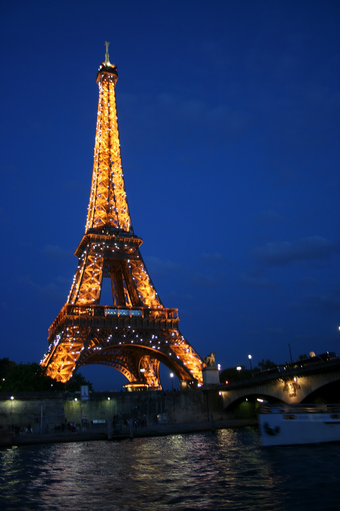
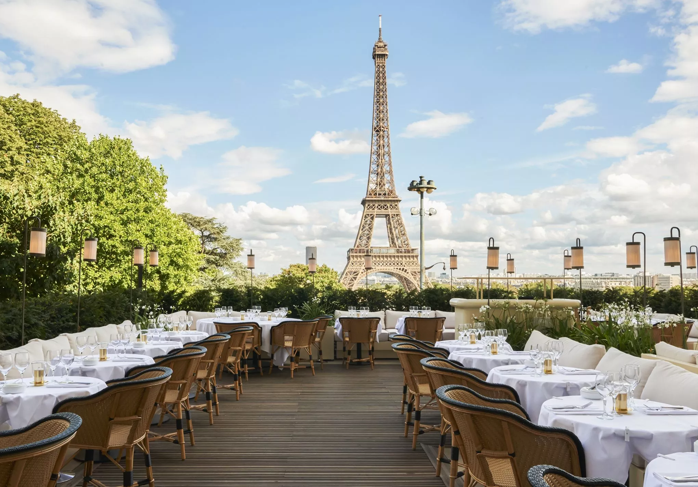
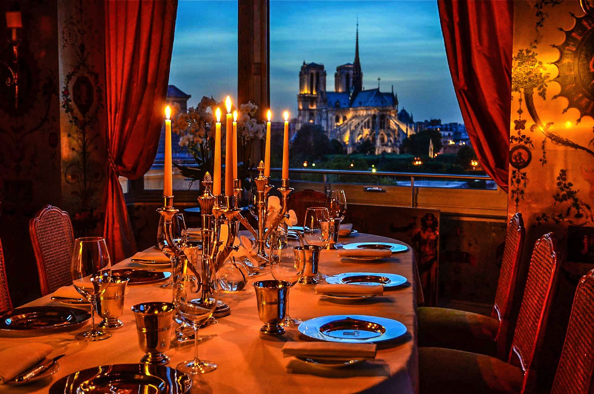

Paris, capital of France, is one of the most important and influential cities in the world. In terms of tourism, Paris is the second most visited city in Europe after London
The capital of France seems to have been designed specifically for the enjoyment of its visitors. Its streets, squares, buildings, gardens and monuments beckon tourists to return, and indeed, many do. Some of the most memorable things to do in Paris include visiting the Eiffel Tower, the Arc de Triomphe and Notre-Dame Cathedral. During the evening, experiencing one of the legendary Moulin Rouge cabaret shows, strolling through some of the most picturesque neighborhoods, like Montmartre, or climbing the Montparnasse Tower are a must. It is always a good time to visit Paris. Depending on where you fly from, you can either make the most of the low-cost airlines flying into the city from other European cities, or take one of its direct flights from further away destinations. If you have children, why not surprise them with a trip to Disneyland?
  